The Challenge
Whether you're already hyper-organized or battling procrastination, bullet journaling can be a fun and effective way to set and track progress towards your personal goals. With this video, our friends at YR Media tell you everything you need to know to create a beautiful bullet journal the old fashioned way, with paper and markers.
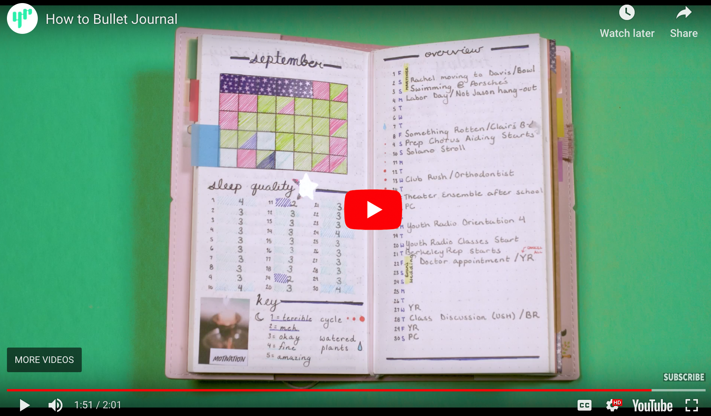Or for those who want it all on your phones, use this guide to make your very own "To Do List" app. Let the productivity begin!
Click "Connect Your App" below to start building your app!
Connect Your App
myToDoList Tutorial (Level: Intermediate)
Introduction
In this tutorial you will learn how to build a "To Do List" app to keep track of your daily tasks. As the items on your list need to be preserved even when you close the app, you will learn how to access the long-term data storage capability of your mobile device using the TinyDB component of MIT App Inventor. Click below to watch this animation to get a feel for the app you are going to build.
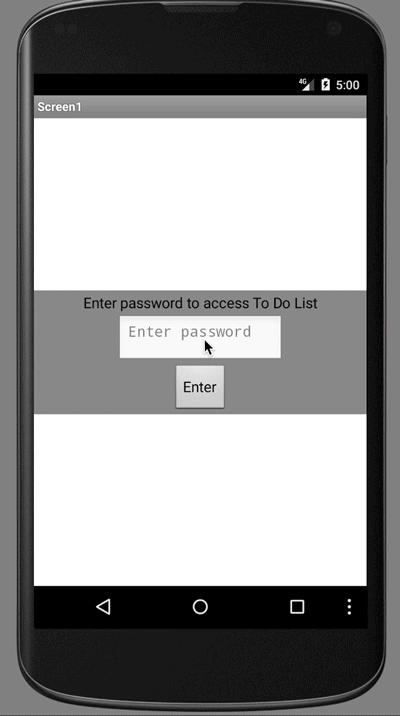The User Interface
This is how the user interface looks. Initially, the user must enter a password. This is needed to maintain the privacy of the user's To Do List from curious parents, siblings, friends, teachers, etc.
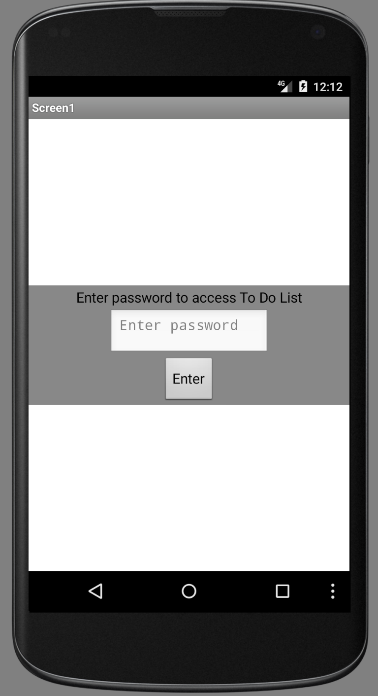Once the correct password has been entered, the user will then have access to a second interface where they can either enter the To Do List items, erase these items individually or erase them collectively.
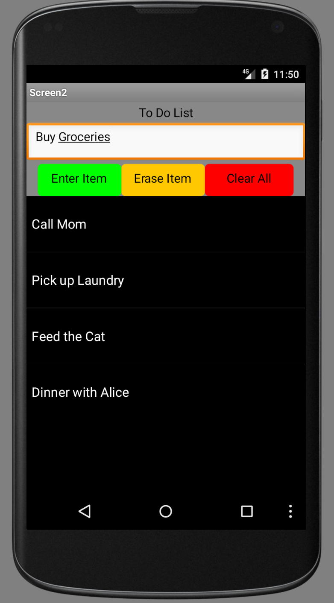The Components
This is what the user interface and the components list looks like in the Designer view of the MIT App Inventor. Note that there will be two screens. The first screen is for the password interface:
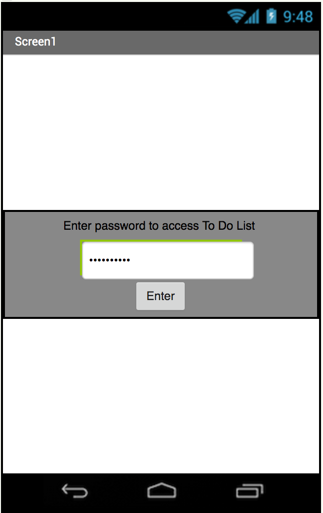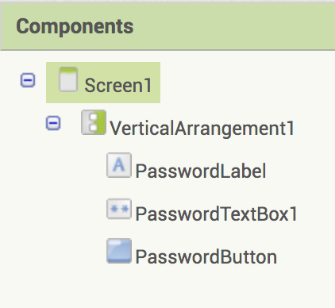and the second screen is for the To Do List interface:
 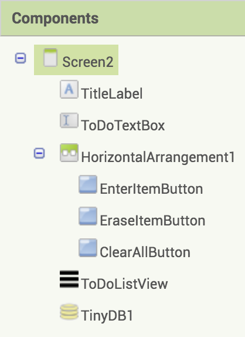
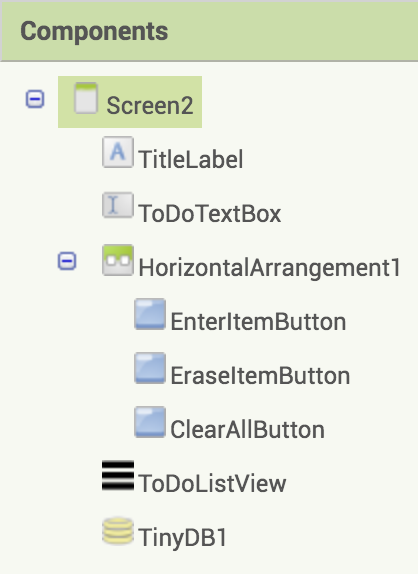Study the components hierarchy in each screen. Can you build the user interface on your own? Try it but if you need help, look at the hints on the next pages as needed. Be sure to rename your components exactly as shown so that you can follow the steps on the coding of the blocks.
Please note that if you would like to be able to pause and restart any of the videos below and on the next page, click on the YouTube button on the video. This will open a YouTube page on a new browser tab from which you can go back and forth to the App Inventor project page as needed. If you need closed captions/ subtitles for a video, click on the CC button next to the YouTube settings.
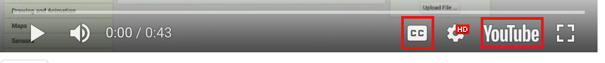Creating the Password Interface
Here are the components you will add to Screen1:
If you need some help with setting up and naming the password interface, click on the help buttons below.
Creating the To Do List Interface
Please note that if you would like to be able to pause and restart any of the videos below, click on the YouTube button on the video. This will open a YouTube page on a new browser tab from which you can go back and forth to the App Inventor project page as needed. If you need closed captions/ subtitles for a video, click on the CC button next to the YouTube settings.
Here are the components you will add to Screen2:
If you need some help with setting up and naming the To Do List interface, click on the help buttons below.
Test your App
When you are done building the user interface, this may be a good time to test your app using the AI Companion via the Connect menu.

Introduction to TinyDB
The TinyDB component stores data locally on the user's mobile phone or tablet. TinyDB can only be accessed by one user on a single device. In other projects you will learn about CloudDB which allows multiple users to store, access and modify data in the Cloud.
Introduction to TinyDB
Here are some of the blocks in the TinyDB drawer.
The following block allows you to store a value in the local memory of your mobile device using a unique tag, very much like how you would assign a value to a uniquely named variable. One important difference to note however is that while a variable can hold a value only until the app quits, a value stored in the TinyDB will be available to the user each time the app is run.

The following block allows you to retrieve a value stored in the local memory of your mobile device using its tag. Note that if there is no such tag, by default an empty string is set to be returned, but you can choose to return some other value instead by replacing the empty string block.
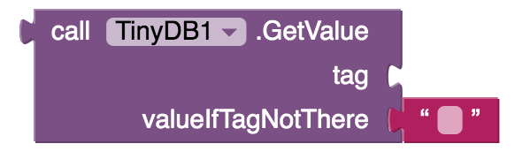The following block will clear the content in the memory associated with a given tag.

The following block will clear the entire data store in the TinyDB.
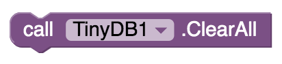Here is some more advanced information you can read about TinyDB.
Screen1 Blocks Editor
Now you will give functionality to the user interface (UI) you have created. Select Screen1 from the screen menu,
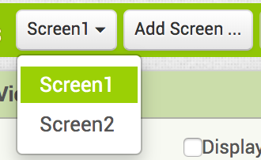and switch to the Blocks editor in Screen1.

Screen1: PasswordButton
Here is the functionality you would like to implement in Screen1 when the PasswordButton is clicked,
- choose a password and if the password entered by the user matches the password you chose, the app should open the next screen, Screen2, where the To Do List interface is displayed.
- if the password entered is incorrect, the password textbox should be cleared so the user can try again.
Do this coding on your own. If you get stuck and would like some hints, click on the hint buttons below.

Screen2 Blocks Editor
Now you are ready to give fuctionality to Screen2. Select Screen2 from the screen menu,
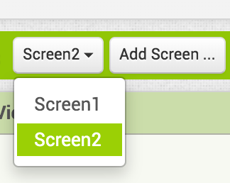and switch to the Blocks editor in Screen2.
Screen2: Initializations
Initialize a variable, todoList, which will be used to keep track of the items in the To Do List. As this variable will hold a list, you need to initialize it with an empty list.
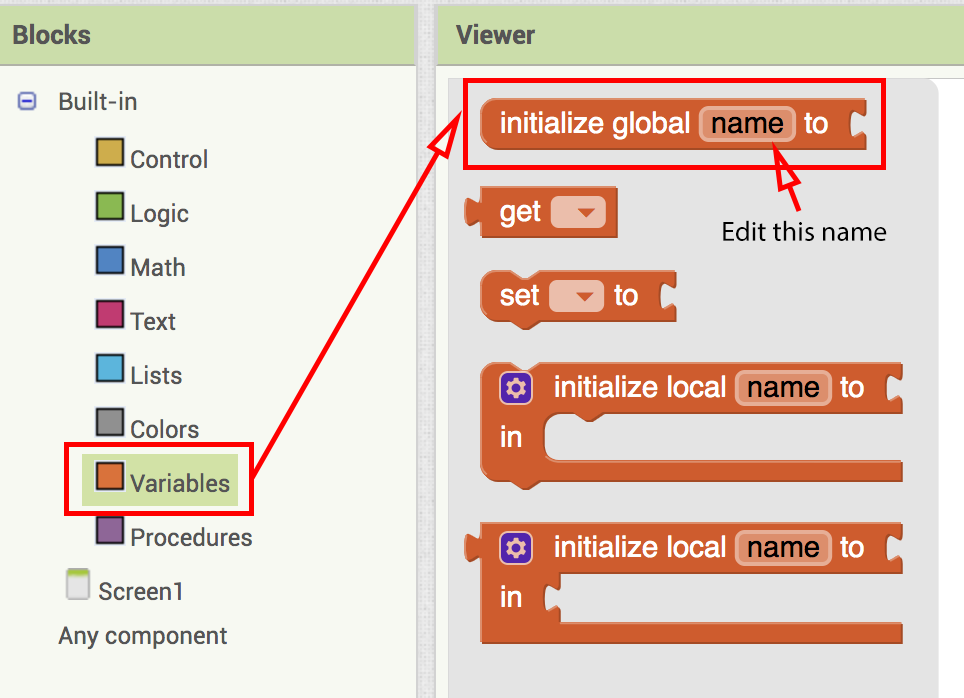 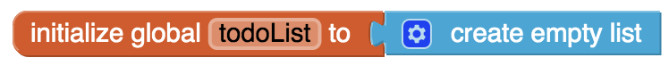When the Screen2 is initialized you will need to
- get the “myToDoList” tag from TinyDB and store its value in the todoList variable;
- set the elements of the ListView component to the todoList variable.
Do this coding on your own. If you get stuck and would like some hints, click on the hint buttons below.
Screen2: EnterItemButton
When the user clicks the EnterItemButton,
- the item in the ToDoTextBox should be added to the list stored in the variable todoList;
- the TinyDB should be updated, so that the most recent list of items is stored in the device memory;
- the ListView component elements should be updated;
- the ToDoTextBox containing the latest item entry should be cleared.
Do this coding on your own. If you get stuck and would like some hints, click on the hint buttons below.
Screen2: EraseItemButton
When EraseItemButton is clicked,
- check that the user has indeed selected an item to be erased;
- remove this item from the todoList;
- update the ListView component elements to reflect the updated todoList;
- update the storage under the tag "myToDoList" in the TinyDB;
- reset the selection index of the ListView component.
Do this coding on your own. If you get stuck and would like some hints, click on the hint buttons below.
Screen2: ClearAllButton
When the ClearAllButton is clicked,
- reset the variable todoList to an empty list;
- reset the ListView elements to an empty list;
- Clear all that is stored in the TinyDB under the tag "myToDoList". Note that you should not clear everything stored in the TinyDB but only the contents stored under the tag "myToDoList".
Do this coding on your own. If you get stuck and would like some hints, click on the hint buttons below.
Test your App!
You are done! Test your app thoroughly.
- While using the AI Companion make sure that, on your computer, Screen1 is the active screen before testing.
- Make sure that the password protection works in Screen1 as intended.
- Make sure that you can enter an item to your To Do List in Screen2.
- Also make sure that you can erase an individual item from the list and clear the entire list of items as needed.
- Quit your app and restart to make sure that the items you stored on your To Do List continue to be accessible each time you run your app.
Expand Your App
- Use a notifier to inform the user if they entered incorrect password and ask them to try again.
- Allow the users to enter their own choice for a password to access their To Do List rather than handing them a hardcoded password you provide.
- Allow editing of an existing To Do List item.
- Allow the users to indicate due dates/deadlines for the list items as they enter into the list.
- Create something like a star rating system where the user can indicate relative urgency and importance of the tasks in their To Do List.
- Allow the user to enter To Do List items by speaking to the mobile device, for example in case the user is unable to type.
- Give an option for the mobile device to speak the list of items to do, for example in case the user is visually impaired.
- Give the user the capability to text or e-mail their To Do List to someone.
- Use your experience creating the To Do List to create your very own mobile-digital-calendar-based Bullet Journal. Review the YR Media story How to Bullet Journal: A Visual Guide by Sarah Ng.
- Your original ideas here. What else can you imagine?
About Youth Mobile Power
A lot of us spend all day on our phones, hooked on our favorite apps. We keep typing and swiping, even when we know the risks phones can pose to our attention, privacy, and even our safety. But the computers in our pockets also create untapped opportunities for young people to learn, connect and transform our communities.
That’s why MIT and YR Media teamed up to launch the Youth Mobile Power series. YR teens produce stories highlighting how young people use their phones in surprising and powerful ways. Meanwhile, the team at MIT is continually enhancing MIT App Inventor to make it possible for users like you to create apps like the ones featured in YR’s reporting.
Essentially: get inspired by the story, get busy making your own app!

The YR + MIT collaboration is supported in part by the National Science Foundation. This material is based upon work supported by the National Science Foundation under Grant No. (1614239). Any opinions, findings and conclusions or recommendations expressed in this material are those of the author(s) and do not necessarily reflect the views of the National Science Foundation.
Check out more apps and interactive news content created by YR here.